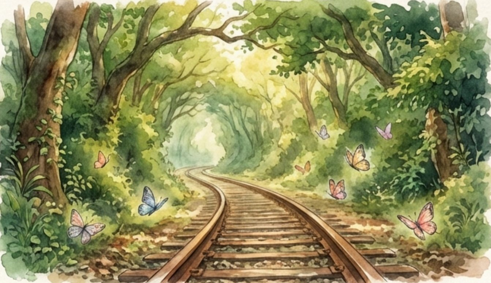
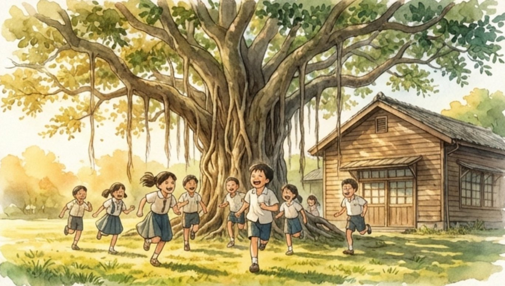
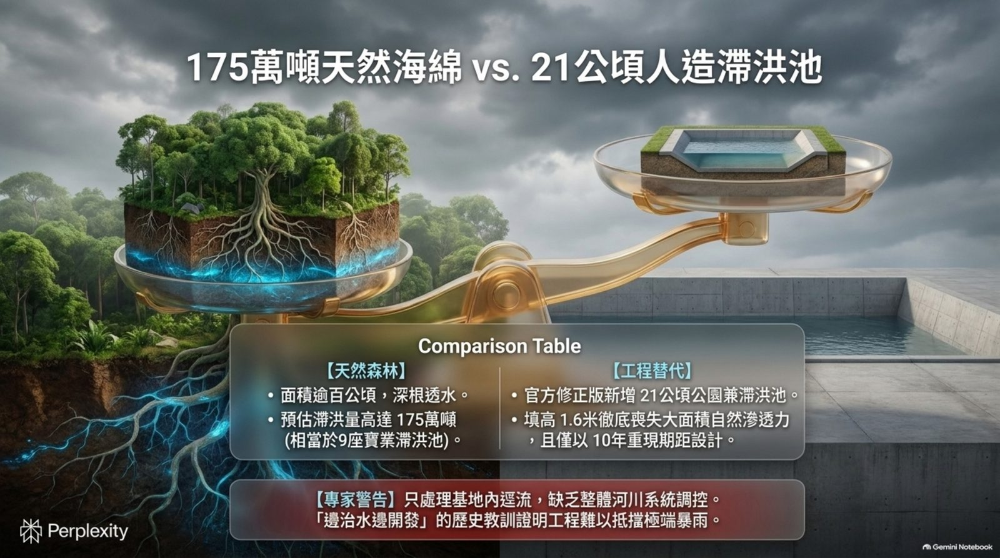
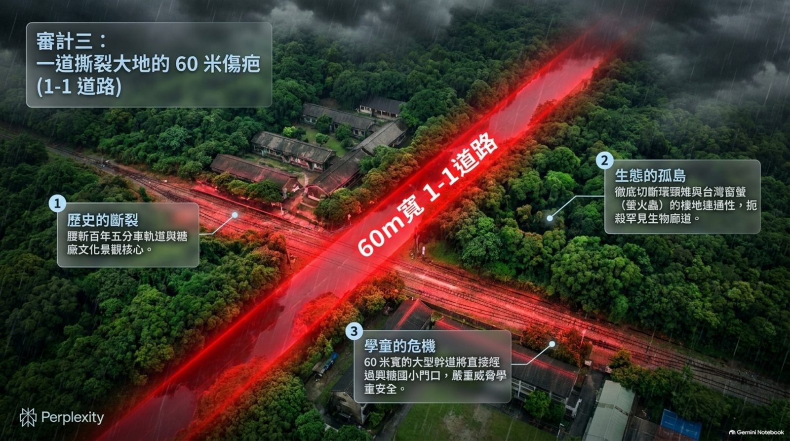
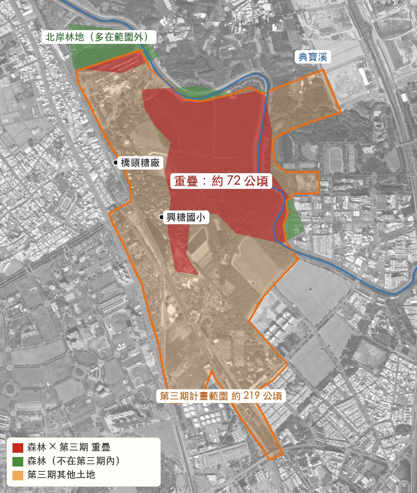
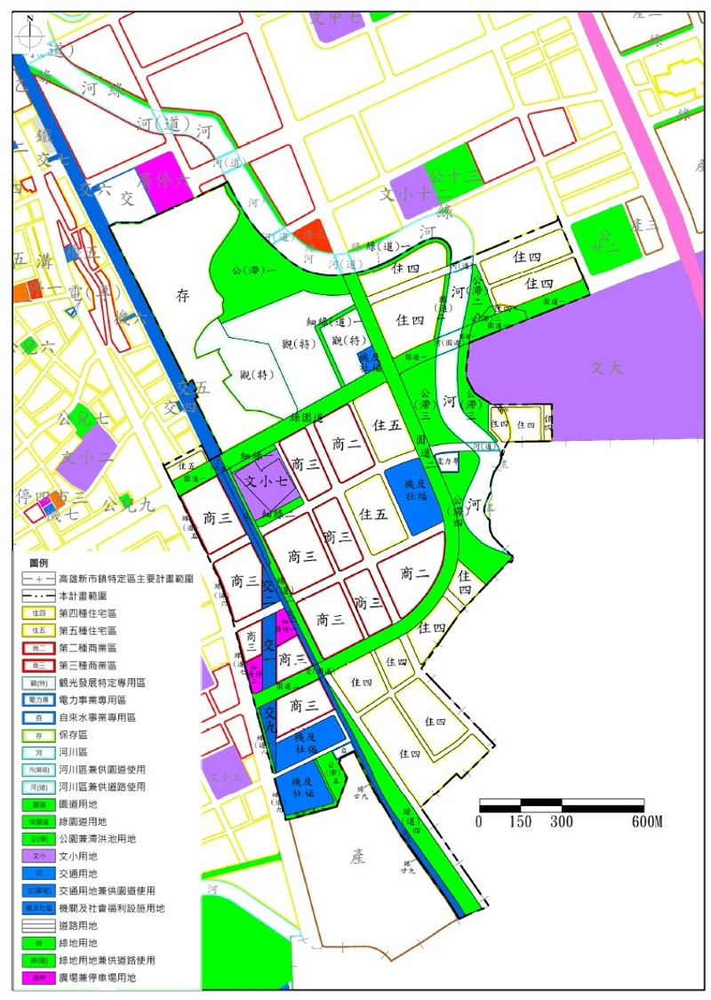
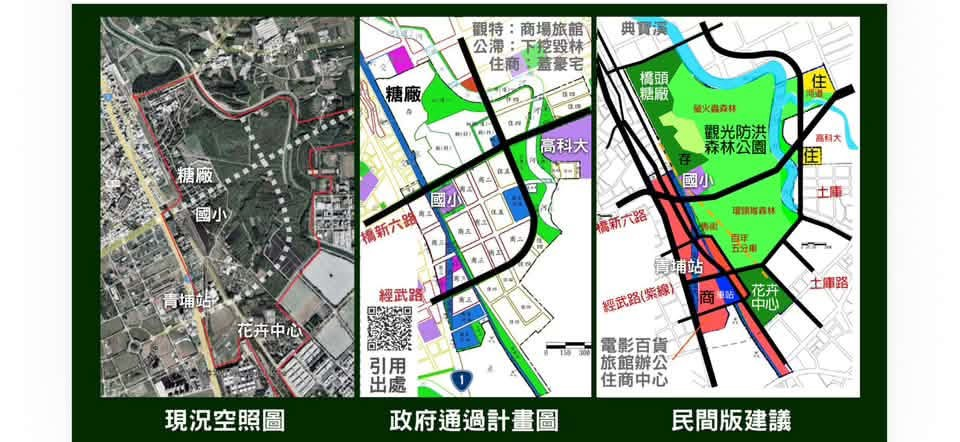
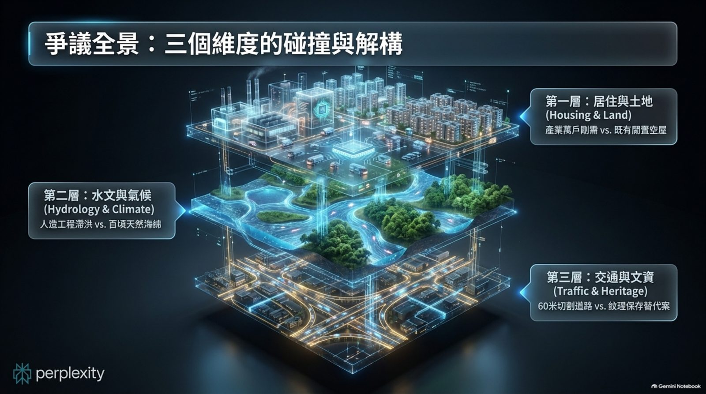

都委會原則同意後，森林保留與開發方案仍有爭議
可確認的審議節點是 2026/7/21 第 1104 次都委會原則同意第三期主要及細部計畫。國土署公布的配置含約 21 公頃文化景觀保存區、19 公頃觀光專用區，以及 21 公頃公園兼滯洪池；這些用地的保留，不能直接等同整片森林原地保留。內政部，2026/7/21。
公視與報導者後續報導指出，修正案仍須補辦地方公展與說明會。本次未取得足以確認補辦公展已完成、計畫已發布實施，或第三期林地已開工清除的最新公告；這是本次查證的限制，不能據此斷言所有程序仍停在 7 月。國土署 7 月提出「最快 2027 年底」的工程預期，也不是已確定的砍樹日期。公視，2026/7/21；報導者，2026/9/26。
原頁引用的是 1996 年整體新市鎮環評與 2026 年 7 月的變更說明。本次未取得第三期最新環評變更審查結論及出流管制核定文件，故不再把舊報導的「仍在審查」直接當作 11/21 現況。查看環評背景與限制。
一輩子在糖廠邊長大的人
沒有政黨、沒有政治背景，她只為一件事參選。
「攏是憨膽啦。」— 蔣黃女談參選，用台語笑自己的傻膽量（聯合報，2026/9/5）
蔣黃女在橋頭糖廠旁長大，年輕時替商行砍甘蔗，後來和先生一起做水泥工。兒子投入糖廠保存與藝術村推動之後，她也跟著走進這片林子，長年擔任環境志工與文化資產推廣志工——哪裡有老樹、哪條是五分車的舊軌道、哪一間是老宿舍，她都熟。
糖廠裡不少樹，是她年輕時看著種下的。得知高雄新市鎮第三期要把這片林地變更為住商用地後，她說參選的理由只有一個：替不會說話的森林發聲。她也說，森林一旦砍了，就再也回不來。
- 姓名
- 蔣黃女（人稱「蔣媽」「森林阿嬤」）
- 年齡
- 83 歲，本屆高雄最高齡議員參選人
- 參選
- 高雄市議員・第三選區
- 選區
- 岡山、橋頭、燕巢、梓官、彌陀、永安
- 黨籍
- 無黨籍，首次參選
- 登記
- 2026/9/4 完成登記
- 號次
- 4 號（選委會姓名號次表，2026/11/21 查核）
- 投票日
- 2026/11/28（六）
- 後援
- 全台逾 70 個環保團體組成後援會；逾 5,000 人連署搶救森林
從護林倡議，到選前的公開追問
本次新增 10 月下旬至 11 月的公開事件；各方訴求、競辦回應與正式審議結果分開記錄。
- 2025/8
在地志工與團體發起「搶救橋頭糖廠百頃森林」運動。
- 2025/12
製作影片〈拯救百年橋頭森林〉，整理第三期開發計畫與替代方案。
- 2026/1/7
環團提出「新 1-1」替代路線：改走既有道路、直接銜接青埔站，宣稱可保留百公頃森林與糖廠，並少徵收私有地。
- 2026/3
橋頭 17 位里長公開表態支持道路開發，批評環團阻礙發展；環團與里長在說明場合爆發口角。
- 2026/5/18
新市鎮三期第四次會議於橋頭區公所召開，焦點是 60 米寬「1-1 道路」是否照原規劃貫穿林地，雙方未達共識；5/18–22 都委會密集現勘與專案小組會議。
- 2026/5 下旬
護樹團體指出區段徵收審議小組的一位委員兼主席同時擔任台糖獨立董事，批「球員兼裁判」；5/27 國土署回應該委員已依規請假迴避，並表示小組意見僅供大會參考。（詳見深讀第 6 段）
- 2026/6/24
開發案進行公益性及必要性審查。
- 2026/7/6
環團要求重啟完整環評，批評以「環差分析」切割闖關；環境部長彭啓明表示依法審查，與原環評承諾不同就須辦理變更。
- 2026/7/21
都委會第 1104 次大會修正後原則同意：部分道路改為綠園道、規劃約 21 公頃公園兼滯洪池；會議限制媒體與民眾旁聽引發爭議。民團帶著 4,000 人連署在場外抗議。修正版仍須補辦公展、說明會後才核定，最快 2027 年底展開區段徵收。
- 2026/9/4
蔣黃女在兒子與森林城市協會陪同下，登記參選高雄市議員第三選區。
- 2026/9/30
全台逾 70 個環團在糖廠成立後援會，大潭藻礁搶救行動聯盟也到場聲援。
- 2026/10/10
83 歲生日當天，森林阿嬤到凱達格蘭大道許願，請賴總統調整計畫：60 米道路改道、縮小開發範圍，把約 154 公頃國有林地規劃為「國家都市森林示範區」。
- 2026/10/27
候選人號次抽籤。蔣黃女遞交護林議題承諾書，柯團隊收下研議；賴競辦事後表示已收到陳情信內容並研究。收件不等於簽署或接受全部訴求。聯合報，10/27。
- 2026/10/30
柯志恩、賴瑞隆首場電視辯論已舉行。中央社摘要不足以確認兩人有無逐項回答森林改道與保留面積，不能以摘要未提及推論整場未討論。中央社，10/30。
- 2026/11/14
洪方隆在公辦政見會談及橋糖森林、評估與土地長期規劃。聯合報，11/14。
- 2026/11/16–11/20
蔣黃女陣營向賴競總遞交辯論挑戰書並持續追問。11/20 報導記載賴本人未在現場具體回答，競辦另回應會與中央聯繫、反映民間意見。來源與日期見下方查證表。
- 2026/11/28
地方公職人員選舉投票日。
我們的森林，你們的記憶影片 2025/12
百年糖廠的工業地景，與周邊 2002 年起的平地造林及其他次生植被，共同構成今日的森林景觀。

五分車與次生林
五分車鐵軌、廠房、宿舍、學校串成「廠、住、校一體」的文化地景，是高雄北部的都市之肺。

孩子的自然教室
緊鄰林地的興糖國小，以「藝術與生態」環境教育聞名，森林就是孩子們的教室。
萬物的家園
草鴞、環頸雉、黃鸝等保育類鳥類，還有螢火蟲，棲息在糖廠周邊林地（「十萬棵」為民團估計，非逐株普查），串起半屏山與典寶溪。
森林，是擋住河水的海綿
這片林地緊鄰典寶溪、地勢低窪，本身就是天然的洪泛空間。凱米（2024）、康芮（2024）颱風時，下游的楠梓、橋頭都曾嚴重淹水。
右圖把兩種做法放上天秤：一邊是深根透水的百頃林地（護樹團體估算可吸收約 175 萬噸洪水），一邊是填高 1.6 米後另闢的 21 公頃滯洪池。夠不夠？見深讀第 5 段。

開發範圍與森林保留的爭議2026/7 方案背景
高雄新市鎮後期發展區（第三期）

第三期約 219 公頃，大半是台糖土地。計畫把林地與蔗田變更為住宅區、商業區，再以區段徵收整體開發；主幹是一條 60 米寬的 1-1 道路。
2026/7 通過的修正版把部分道路改為綠園道、增設約 21 公頃公園兼滯洪池，但 1-1 仍是串聯一至四期的主要幹道，改道訴求未被採納。第三期蓋在哪片森林上？看重疊圖 →
官方的理由是半導體 S 廊帶帶來的住宅與交通需求；需求估算是否合理，是爭議核心之一（見深讀）。
一條路，要從哪裡穿過去？
先看示意圖理解結構，再看實際地圖對照位置。第三期計畫範圍約 219 公頃，位在新市鎮一期（西南）與二期（東北）之間：典寶溪以西、台 1 線以東，涵蓋糖廠、造林地與捷運青埔、橋頭糖廠兩站周邊。
2026/11/22 圖片查證補充：三欄對照圖的出處、版本與正確性。下方互動地圖與示意路線仍屬本站整理，不能當作正式計畫線形。
示意圖
不按比例。淡黃色虛線框是第三期計畫範圍，涵蓋糖廠、造林地、興糖國小周邊與捷運兩站。紅色數字是舊 1-1 的三個衝突點：① 從糖廠與興糖國小之間穿過，切斷五分車、經過國小門口；② 斜穿造林地核心；③ 跨越典寶溪的洪泛空間。
實際地圖
河川、五分車、鐵道與捷運為 OpenStreetMap 實際線形；造林地範圍依衛星影像目視判讀。第三期範圍、1-1 道路與糖廠保存區，依國土署細部計畫土地使用分區圖（自由時報轉載）與實際座標對位描繪，換算面積約 230 公頃（官方 219.35 公頃），位置誤差約數十公尺；新 1-1 為依新聞描述繪製的示意。正式路線請以國土署公開展覽計畫書圖為準。
重疊。糖廠旁的森林，
約 94% 落在第三期範圍裡。
把衛星照片上的森林（約 77 公頃）和第三期範圍（約 219 公頃）放在一起量：
- 紅色：約 72 公頃，森林在第三期範圍內——幾乎是整片核心林地。
- 綠色：不在範圍內的，主要是典寶溪北岸火車站旁的小片林地。
- 橘色：第三期其餘的土地，包括糖廠園區、農地、捷運站周邊。
官方數字也對得上：國土署計畫書記載，計畫區現況「闊葉林」約佔 29.79%，換算約 65 公頃；我們量到約 75 公頃，數量級一致（差距多來自林緣與溪邊綠地的認定）。
森林範圍依衛星影像描繪；第三期範圍依國土署細部計畫圖對位，誤差約數十公尺。


看分區，也要看版本；
綠色用地不等於原有森林全數保留。
市府 2026/7/21 說明列出約 21 公頃文化景觀保存區、19 公頃觀光發展特定專用區，以及約 21 公頃公園兼滯洪池；部分道路調整為綠園道及園道用地。這些用途與保留既有森林，仍須分開檢視。
本頁原「8 成住商道路／2 成公園」圖表撤下：它依媒體轉載圖及目視林界估算，尚未與這次取得的官方附圖逐區對位重算，不能當成現行計畫統計。原森林重疊圖只表示計畫範圍與目視林地的關係，不代表其中樹木都會移除。
「只保留約兩百棵」更正：市府將保留 195 株、移植 357 株、新植 8,253 株，列在 1-2 號道路、友情路及大遼路工程的說明中；不能據此推算全區僅保留 195 棵，更不能推出其餘森林都會消失。
公園兼滯洪池如何施工、保留多少既有樹木，仍須查工程設計及樹木調查。市府表示會在實質開發階段依法調查、評估保留與移植；本頁不將此承諾視為已完成調查或保林成效。
這張「現況／政府／民間」對照圖，該怎麼讀？
它能幫助理解民間替代構想；圖上的評論、計畫版本與正式核定狀態，需要分別查證。

找到的公開出處
台灣森林城市協會的回應文章刊有相同空照底圖、相近政府分區圖及民間路網配置的三欄版本；但右欄標「公兼滯」，本圖標「觀光防洪森林公園」，文字與排版並非完全相同。可確認與協會公開倡議圖組相關，尚不能證明本圖由誰最先製作。
能確認的刊登日期
PeoPo 公民記者「路人甲的真心」於 2026/10/28〈橋頭阿嬤護森林〉刊登「003政府版民間版」相關三欄圖。這是可確認的公開刊登紀錄，並非本張圖的首發日期；PeoPo 公民報導也不等於公視新聞編輯部背書。
| 圖上的內容 | 查證判讀 |
|---|---|
| 現況空照與紅色邊界 | 可用來辨認糖廠、興糖國小、青埔站與林地的相對位置；原圖沒有清楚拍攝日期或邊界圖例。紅框不能直接認定為森林邊界，也不能據此量出官方面積或砍樹數。 |
| 「政府通過計畫圖」 | 中圖的分區與路網與市府 2026/7/21 附圖有可辨識的對應，但本圖未載版次，也疊加了粗黑路線及評論。不能認定兩者逐筆相同，更不能用「通過」證明已核定公告實施。7/21 公視報導記載修正後仍須補辦公展；本次未取得更新的公告實施圖。 |
| 「公滯：砍挖毀林」「住商：蓋豪宅」 | 屬製圖者對開發影響的評論。正式圖例為「公園兼滯洪池用地」、住宅區及商業區等；分區本身不證明全部砍除、特定建築售價或未來一定興建豪宅。 |
| 「觀特：商場旅館」 | 官方分區名稱是「觀光發展特定專用區」；圖上文字是用途的簡化說明，不能視為商場或旅館已獲具體建案核准。 |
| 「觀光防洪森林公園」與外圍道路 | 屬民間願景。2025/12/19 市議會公聽會邀請書已記載保留防洪森林、觀光利用、私人建地集中捷運站旁，以及 1-1 道路改走經武路—清豐六路—苓林路接橋科的構想，足以證明訴求有公開紀錄；不代表右圖全部線形已獲採納或已通過交通、水理及工程可行性審查。 |
查核範圍：本張圖片、協會與 PeoPo 相關版本、市議會公聽會資料、市府 2026/7/21 新聞稿附圖及公視程序報導。國土署審議資料站本次回傳存取拒絕，未完成正式計畫書與會議紀錄逐頁比對，因此不宣稱本圖已全面驗證，亦不宣稱這是截至今日的最新法定計畫。
查證來源
- 台灣森林城市協會：回應文章及相關三欄圖（倡議方的一手說明）。
- PeoPo〈橋頭阿嬤護森林〉，2026/10/28（相關版本的公開刊登紀錄）。
- 高雄市議會：2025/12/19「守護橋頭糖廠百頃森林」公聽會邀請書（第 2–3 頁為議題與民間構想，不是採納決議）。
- 高雄市都發局：2026/7/21 審議通過說明及附圖（政府立場、分區及道路植栽數字）。
- 公視我們的島：2026/7/21 都委會審議報導（當時的修正、公展與核定程序）。
為什麼有人想開路，有人想留樹
支持開發的聲音也來自在地，值得被認真聽見。
支持開發
- 橋頭長年被糖廠用地包圍，發展受限；里長形容「提早 55 分鐘出門還是塞車」。
- 里長聯誼會認為新市鎮是「百年一遇的翻轉機會」，開發難免移植部分樹木。
- 國土署：方案已大幅修正，未來依樹木保護規定，在公園兼滯洪池廣植喬木。
- 台糖與農業部確認：糖廠林木屬於「短期人工經濟造林」，不是天然林。也有專欄認為，這和台北行道樹爭議性質不同，應聚焦保留多少綠地與生態補償，而非「亂砍樹」口號。
守護森林
- 高雄人口連續近十年下滑、周邊近 400 公頃土地可規劃，為何非砍森林不可？
- 60 米道路經過國小門口，學童通學安全堪慮；洪患風險上升。
- 人工林也已長成數十年的次生林，8 種保育類鳥類與螢火蟲在此棲息。
- 「左手都市林、右手毀森林」——與總統的都市林政策矛盾；審查程序也有利益迴避疑慮。
五位市長候選人，對橋糖森林說了什麼？
依選委會號次排列。收下文件、一般性環境主張、支持開發、承諾道路改道，意義各不相同。下表是本次可核對的公開紀錄，並非所有發言的完整逐字稿。
手機閱讀：可左右滑動下表，查看完整發言與查證界線。
| 候選人 | 有日期的公開態度／陣營回應 | 查證界線 |
|---|---|---|
| 1 號 張靜 司法改革黨 | 查閱本屆選舉公報，並以姓名搭配「橋頭／森林」檢索，本次未找到可核對的本案具體表態。 | 列為「本次未查得」，不推論支持或反對。 |
| 2 號 王肇民 無黨籍 | 同上，本次未找到針對橋糖森林保留、1-1 改道或第三期範圍的具體公開態度。 | 一般建設政見不等於支持本案；未查得也不等於從未表態。 |
| 3 號 柯志恩 國民黨 | 5/19 報導：主張開發應優先盡量保留森林，兼顧永續與地方需求。10/27 團隊收下承諾書，表示關切並帶回研議。聯合報，5/19；聯合報，10/27。 | 目前取得資料未確認已簽署承諾書，也未確認明確承諾 1-1 改道、完整保留百頃森林或取消第三期。 |
| 4 號 洪方隆 無黨籍 | 11/14 公辦政見會談及橋糖森林：曾主張增加環境差異評估，並表示應依氣候風險思考長期土地規劃，由民意討論決策。聯合報，11/14。 | 原頁「查無表態」已修正。這項發言仍不足以確認完整保留範圍、道路替代線形與執行承諾。 |
| 5 號 賴瑞隆 民進黨 | 5/19 提出開發與永續兼顧。10/27 競辦事後表示收到陳情內容、正研究。11/20 本人現場未具體回答護林提問；同篇報導中，競辦表示中央已研議配套，將反映地方與民間意見，尋求兼顧方案。聯合報，5/19；10/27；中時，11/20。 | 11/16 蔣陣營指其「大港政策島」支持第三期；本次未取得該政見原文作獨立比對，故保留為具名指稱。不能把支持開發直接改寫為承諾砍光所有樹木。 |
名單與號次：高雄市選委會姓名號次表；115 年市長選舉公報。兩者 2026/11/21 查閱；文件日期未明示於此連結者不另推定。
市府與中央：開發理由與保存配置
現任市長陳其邁並非本屆市長候選人。第三期計畫由內政部國土署推動，中央 7/21 說明以產業衍生居住、商務與交通需求為理由，配置糖廠文化景觀、觀光用地及公園兼滯洪池。這是官方規劃說明，與民團要求百頃森林原地保留，仍有差距。內政部，2026/7/21。
一期、二期，真的只住進一成的人嗎？
「過去引進人口偏低」有資料依據；但社群流傳數字混用了年份、行政里界、計畫區界與人口類型，不能直接當成今日入住率。
第一期計畫人口
2021 年 11 月主要計畫表 6-5-2 列明的第一期目標；24 萬、17 萬則是全區目標，不能拿來算第一期入住率。
兩里戶籍人口合計
2026 年 10 月新莊里 9,069 人、甲北里 4,151 人。這是兩個行政里的總人口，不是第一期範圍內的精確入住人數。
第二期計畫人口
2022 年 10 月細部計畫變更書第 2-1 頁所述。它是規劃目標，與就業人數、樓地板容量估算及目前人口不同。
社群貼文逐項核對
| 流傳說法 | 查證結果與建議讀法 |
|---|---|
| 第一期 2008 年竣工 | 有依據，但應註明工程範圍。市府土地開發處列第一期區段徵收工程於 2008/10/17 竣工，該區段徵收範圍為 270.81 公頃。這不等於全部第一期建築、住宅都在當年完成，也不等於全部第一期計畫面積。 |
| 第一期目前 8,000～1.2 萬人；達成率 15%～22% | 混用時點與範圍，不能作為當前精確入住率。立法院 110 年度預算評估引用營建署截至 2020 年 8 月資料，列引進人口約 8,000 人；公視 2025 年報導的約 1.2 萬人則是新莊、甲北兩里合計。兩種數字除以 54,000，算術上約為 14.8%、22.2%，但統計年份與地域口徑不同，不能合併成同一個當期達成率區間，更不能把 8,000 人直接稱為目前設籍人口。 |
| 第二期計畫移入 1.8～2.2 萬人 | 數字有不同版本與類型，應拆開。2018 年版本把計畫人口訂為 20,000 人，住商可容納人口估為 18,030 人；2021 年 11 月主要計畫估算住商容量為 21,530 人；2022 年 10 月細部計畫變更書說明現行第二期計畫人口為 18,000 人。不能把這些數字全部稱為同一版的「計畫移入人口」，也不能把居住容量等同實際遷入人數。 |
| 既有聚落目前約 1,286 人 | 年份錯置。2018 年計畫書第 3-7 頁明載：依里別面積與門牌點位推估，計畫範圍內 2017 年底約 1,286 人。這是歷史估計基準，並非 2026 年人口普查或最新戶籍統計。 |
| 第二期新增住商移入 0 人 | 本次未證實，暫不採用。尚未取得以第二期計畫邊界計算、附統計日期的新增居住人口資料。「沒有找到入住統計」不等於「已證明為零」；建廠員工、通勤人口也不能拿來代替住商區居民。 |
| 第二期預計 2025 年底完工 | 已不能當作現況。內政部記載橋頭科學園區於 2026/1/2 啟用，當時完成初步基礎建設，招商、進駐與部分聯外工程另有進度。新市鎮第二期範圍還包括園區外住商土地，不能把「園區啟用」寫成全部住宅完工或已住滿。 |
| 計畫年期至 2036 年 | 有官方依據。2021 年主要計畫與 2022 年細部計畫變更書均列民國 125 年（2036 年）。計畫年期是規劃的時間基準，不是保證人口達標或住宅完工的日期。 |
| 全區目標從 24～26 萬降至 17 萬 | 24 萬降至 17 萬可確認；26 萬本次無法確認。2021 年主要計畫第 6-14 頁列主要計畫人口 24 萬調為 17 萬，另把土地可容納人口 24.71 萬調為 17.71 萬。兩組數字分別為「計畫目標」與「容量估算」，不宜混成 24～26 萬。 |
| 第一期仍有 80～100 公頃未開發 | 有媒體及民團說法，但不是同一份官方現況清冊。公視 2025 年報導提及約 80 公頃住商用地閒置；2026/8/30 報導引述民團稱，截至 2025 年底約 100 公頃土地未開發。時間與用地口徑不同，不能合併成精確區間；也不能與 2020 年官方「未銷售土地 21.56 公頃」混用，未售與未開發是兩回事。 |
查看原始資料、頁碼與查核限制
- 內政部：2021 年 11 月主要計畫變更書，第 6-14 頁（PDF 第 105 頁）：第一期 54,000 人、全區 240,000 調為 170,000 人、第二期住商容量 21,530 人。此處列的是 2021 年版本，不宣稱已涵蓋後續全部修訂。
- 內政部：2022 年 10 月第二期細部計畫變更書，第 2-1 頁（PDF 第 7 頁）：說明 2021 年公告細部計畫、第二期計畫人口 18,000 人及 2036 年計畫年期。
- 市府公開的 2018 年第二期細部計畫版本，第 3-7 頁（PDF 第 25 頁）：1,286 人是 2017 年底推估；第 4-1 頁（PDF 第 44 頁）：20,000 人目標與 18,030 人容量。此版用於追溯數字，不當作最新定案。
- 立法院：110 年度預算評估「高雄新市鎮開發引進人口數偏低」，表 1：截至 2020 年 8 月約 8,000 人。原文網頁本次直接存取受限，另以搜尋索引可讀之完整表格核對，故不把這項歷史數字推及今日。
- 岡山戶政事務所：115 年人口概況統計；橋頭區 2026 年 10 月原表：新莊 9,069、甲北 4,151，合計 13,220 人。本頁自行相加，未以里界替代計畫區界。
- 市府土地開發處：第一期區段徵收工程資料：270.81 公頃、2008/10/17 工程竣工；頁面正文另以搜尋索引核對。
- 內政部：橋頭科學園區啟用新聞稿，2026/1/2：初步基礎建設、招商進駐與後續工程說明。
- 公視我們的島：誰來決定新市鎮，2025/12/14；衝突中找解方，2026/8/30：兩里人口、閒置土地與民間質疑的報導脈絡。
本次未取得依一期、二期法定邊界統計的最新實際居住人口，也未完成全部後續都市計畫修訂清查。因此「當前精確入住率」與「第二期新增住商人口為零」均維持待查；戶籍人口亦不同於實際常住、購屋或通勤人數。
砍不砍樹之外，真正該問的三件事
「砍樹 vs. 不砍」是被簡化的說法。把各方說法攤開來看，爭議其實落在這三個問題上。
需求是真的嗎？
官方說需要約 1 萬戶，影片當時推估約 4,000–8,000 戶，差距將近一倍。估算依據有公開嗎？
綠地該變成誰的資產？
國營事業的造林地，透過區段徵收變成高價建地。這是全台平地造林屆期後都會遇到的問題。
路非走那裡不可嗎？
環團提出「新 1-1」改道方案，修正版未採納，官方也還沒公開說明兩案比較。

1這片「森林」到底是什麼？
糖廠本身：1901 年啟用，是台灣第一座現代化機械製糖廠，園區約 25 公頃，有百年建築與五分車鐵道。
周邊的林子：原本是蔗田。台糖自 2002 年起配合政府「平地造林」政策種樹，獎勵補助期限 20 年，現已屆期。2021 年農業部把台糖造林地分成三類：具生態價值的保留、適合農業的恢復耕作或做農電共生、地力不佳的設太陽光電。也就是說，這些樹本來就站在「補助到期後怎麼辦」的十字路口。
兩邊都說對了一部分：台糖說這是「經濟造林，不是原始森林」——沒錯；但長了二十多年，已成為 8 種保育類鳥類與螢火蟲的棲地——也是事實。
面積為什麼差這麼多：台糖說徵收範圍內的人造林約 51 公頃；護樹團體說「百頃」、主張保留約 154 公頃國有林地。差別在於只算徵收範圍，還是糖廠周邊所有林地。
2新市鎮為什麼要開發第三期？
歷史目標與實際人口：第一期計畫人口為 54,000 人；立法院預算評估引用截至 2020 年 8 月引進約 8,000 人的資料，這是歷史數字。全區目標則於 2021 年由 24 萬調為 17 萬，不能與第一期分子混算。2026 年 10 月新莊、甲北兩里共 13,220 人，里界並非第一期計畫邊界。查看原始計畫、最新戶籍表與口徑差異。
這次的理由：橋頭科學園區已啟用，核准 26 家廠商進駐，全面營運後預估約 1.1 萬個就業機會，加上半導體 S 廊帶，官方據此估算住宅需求。
反方質疑：現有未開發土地及住宅是否足以優先承接需求？媒體與民團提出過約 80 公頃住商用地或約 100 公頃未開發土地，年份與口徑不同，不能直接合併；亦不能把全市人口減少等同橋頭區人口減少。詳見人口與土地數據查證。
3錢的問題：區段徵收怎麼運作？
區段徵收是政府把整片土地收回、重新規劃道路與公園後，按比例發還一部分建地給原地主（稱「抵價地」）。
- 第三期約 219–226 公頃，台糖與台灣糖業協會土地占 102–163 公頃（各報導數字不同），是最大地主。
- 台糖將領回約 40.72 公頃建地。
- 環團估算台糖獲利 300–555 億元（以鄰近建地每坪約 18 萬元 × 102 公頃計）。
- 台糖回應：只領回 40.72 公頃、採「只租不售」、還要負擔高額地價稅，「絕無大賺 500 億」。
結構性的問題：國營事業的綠地一經都市計畫變更，就成為高價建地；若改劃公園，這筆價值就不存在。這也是審查程序的利益迴避問題會引發強烈爭議的原因（詳見下方第 6 段）。
41-1 道路為什麼要走那裡？
官方理由：1-1 道路是串聯新市鎮一至四期、銜接交流道的主要幹道；橋頭長期塞車，里長形容「提早 55 分鐘出門還是塞」。
替代方案：2026/1 環團提出「新 1-1」，改走既有道路、從興糖國小南側經過、直接銜接青埔站，宣稱路程更短、徵收私有地更少，又能保留森林。
現況：7 月通過的修正版沒有採納改道，官方也還沒公開說明不採納的理由——這是目前最大的資訊缺口之一。
5淹水風險：滯洪池夠不夠？
修正版在典寶溪旁規劃約 20 公頃公園兼滯洪池，以「10 年重現期距」設計，吸納開發後增加的逕流。
受訪的都市規劃學者在公視《我們的島》指出：現行規劃只處理基地內的逕流，沒有做到整個河川系統的調控。凱米（2024）、康芮（2024）颱風時，楠梓、橋頭都曾嚴重淹水。水利署的出流管制計畫仍在審查中。
6審查程序爭議：球員兼裁判？
本段依公開報導整理各方說法，不涉及對任何個人的評價；爭議中的當事人以職務描述，不具名。
發生了什麼（依 2026/5 下旬多家媒體報導）：
- 本案區段徵收審議小組的一位委員兼主席，同時擔任台糖的獨立董事。台糖是本案最大地主，土地約占計畫面積 57%。
- 護樹團體指出，2026 年 5 月中下旬 8 個工作天內密集召開 5 場會議，地點在台中、高雄、台北之間變動，並有臨時改地點、民眾發言登記受限等情形。
- 5/27 第 6 次專案小組會議當天，國土署表示該委員「已主動依規定自行迴避並請假」，改由出席委員代理主持。
各方說法：
- 護樹團體：援引「各級都市計畫委員會組織規程」第 11 條（委員對有利害關係的案件應自行迴避），以及獨立董事應保持獨立性的規定，要求該委員出席的小組會議視為無效、重新召開。
- 國土署：委員已迴避；小組意見僅供都委會大會參考，「程序上尚未做出任何最終決定」，大會決議才是最終決議。
- 台糖：符合法規，委員係接獲內政部通知、以審議委員身分出席；開發案由內政部主導，台糖配合政策。
真正的爭點：迴避之後，問題就解決了嗎？
- 方案通常在專案小組逐條修正成形，大會多以小組意見為基礎；迴避前的幾場會議，正是方案成形最密集的階段。
- 迴避發生在事情被公開之後；原頁當時未取得國土署回溯檢視或重開會議的資料。7/21 大會即在此基礎上「修正後原則同意」。
- 是否影響計畫的合法性，最終要看是否有人提起行政救濟、法院如何認定；本次未完成司法案件清查，不能據此認定沒有相關訴訟。
為什麼特別敏感：土地從林地變成住商用地，價值是在「審議」這一刻產生的。改劃公園，這筆價值就不存在。更深一層看，主辦的國土署（內政部）與地主台糖（經濟部所屬國營事業）同屬政府體系——個別委員的身分，只是這個結構裡最容易被看見的一點。這也是公開資料、第三方獨立審查的訴求為何重要。
仍待釐清：迴避前那幾場小組會議的決議內容與紀錄是否公開？7/21 大會的出席與表決情形？
7環評：30 年前的環評，能決定今天的森林嗎？
資料時點與限制（2026/11/21）：以下為舊環評及 7 月報導的背景。本次未取得第三期最新環評變更送審案號、結論或出流管制核定文件，無法確認目前是否已審竣。本頁記錄的利益迴避爭議屬都市計畫程序，不應與環評委員混為一談。
- 1996 年：高雄新市鎮整體開發的環境影響評估，經當時的環保署審查通過。那時台糖還沒在這裡平地造林（2002 年才開始）。
- 7 月報導所述：國土署以「環境影響差異分析」處理第三期變更——也就是只比較新方案和舊環評差多少。護樹團體批評，以「變更幅度在一定比例內」為由不重做環評，是把案子切開來闖關，要求重啟完整環評。
- 環境部的立場（2026/7）：依法審查；只要開發內容與原環評承諾不同，就要辦理環評變更。但要等國土署完成都市計畫程序後，案件才會送到環境部。
為什麼這很重要：1996 年的評估裡，沒有一片長了二十多年、有 8 種保育類鳥類棲息的造林地，也沒有凱米、康芮這種等級的暴雨經驗。用當年的基準來判斷今天的影響，正是這次爭議最需要被公開檢驗的地方。
接下來可以盯的：差異分析報告何時送環境部、審查會是否公開旁聽、是否被要求重做完整環評。
還缺的四份資料
只要這四份資料公開，爭議會清楚很多。這也是最實際、最不分立場的要求。
以今天的林地與氣候條件，重新評估開發影響。
到底有多少樹、樹種與胸徑分布？
不只基地內，整條典寶溪的淹水風險變化。
交通效益、徵收成本、生態衝擊並列。
是短期的土地利益，還是永續的生態價值？影片 2025/12＋2026 補充
我們的選擇，將決定這片土地的百年命運。下方兩張圖皆為 AI 生成示意，點擊可放大。
你的聲音，就是森林的回音
不必住在橋頭，也能幫上忙。
加入聯署，搶救橋頭糖廠與百頃防洪森林
連署由「搶救橋頭糖廠百頃森林」與「森林城市協會」發起，邀請關心糖廠文化、森林生態與防洪議題的朋友參與。
填寫聯署表單將另開 Google 表單，由你自行填寫與送出。表單內的訴求與數據為發起團體說明；本站查證結果請見上方相關段落。
把這頁傳給一個人
很多人不知道高雄正有一座百年森林可能消失。分享，是最簡單也最有效的事。
第三選區的朋友：11/28 去投票
如果你或家人的戶籍在岡山、橋頭、燕巢、梓官、彌陀、永安，認識一下這位 83 歲、只為森林參選的候選人。蔣黃女為第三選區 4 號；姓名號次以選委會公告為準。
聯署與公共參與
參與上方聯署，並追蹤森林城市協會等護樹團體的行動與說明會，在都委會與環評程序中持續發聲。
聽，森林的低語
這個網頁改寫自我在 2025 年 12 月製作的影片〈拯救百年橋頭森林〉。
樹砍了，要再等一百年。
森林會記住我們的選擇。
一同守護我們的未來。
本次新增查證來源（2026/11/21）
官方文件用於確認名單與計畫節點；媒體報導用於核對公開事件與具名發言。新聞轉載不當成第二份獨立證據。未取得候選人原文的指稱不升格為已證實政見。
- 內政部／國土署，2026/7/21：都委會原則同意、保存配置與工程預期
- 報導者，2026/9/26：橋頭，誰的更好生活？（含後續公展程序背景）
- 聯合報，2026/10/27：遞交護林承諾書；包含賴競辦事後回應
- 中央社，2026/10/30（10/31 更新）：市長電視辯論報導
- 聯合報，2026/11/14：洪方隆政見會談森林、環境評估及土地規劃
- 聯合報，2026/11/16：蔣黃女遞交辯論挑戰書（涉及賴政見部分為蔣陣營指稱）
- 中時新聞網／任義宇，2026/11/20，Yahoo 轉載：現場追問與賴競辦完整回應
- 高雄市選委會：市長、市議員候選人姓名號次表（2026/11/21 查閱）
- 高雄市選委會：115 年市長選舉公報（2026/11/21 查閱）
歷史資料來源
- 聯合報〈「憨膽啦」83歲蔣黃女披戰袍 為守護橋頭糖廠森林拚議員〉2026/9/5
- 自由時報〈守護橋頭森林 83歲蔣黃女登記參選高雄市議員〉2026/9/4
- 聯合報〈83歲蔣黃女披戰袍守護橋頭糖廠林地 全台環團聲援組織後援會力挺〉2026/9/30
- 聯合報〈83歲「蔣媽」護樹選高市議員 逾70環團聲援〉2026/10/1
- 聯合報〈83歲「森林阿嬤」上凱道 籲賴總統勿砍橋頭糖廠10萬棵樹〉2026/10/10
- 聯合報〈影／83歲「森林阿嬤」蔣黃女 盼望搶救橋頭糖廠10萬棵老樹〉2026/10/10
- 聯合報〈民團抗議高雄新市鎮開發恐砍百公頃森林 國土署回應了〉2026/7/21
- 聯合報〈橋頭糖廠森林開發案惹議！環團籲重啟環評 彭啓明：依法審查〉2026/7/6
- 公視新聞〈橋頭新市鎮3期召開第四次會議 道路將貫穿林地引正反論戰〉2026/5/18
- 上下游〈橋頭糖廠百頃開發爭議，民團控審查主席身兼台糖獨董〉
- 中時〈愛樹不愛人？橋頭17里長挺道路開發〉2026/3/16
- 聯合報〈橋頭新市鎮開發毀糖廠百頃森林 柯志恩、賴瑞隆回應〉2026/3/11
- 聯合報〈闢路vs.森林 柯志恩賴瑞隆都喊永續平衡〉2026/5/19
- LINE TODAY〈高雄新市鎮三期開發案過關！橋仔頭糖廠21公頃完整保留 市府火線回應了〉
- 大紀元〈下屆高雄市長5人登記參選〉2026/9/5
- 中時〈高雄市長首場辯論敲定！柯志恩、賴瑞隆同台交鋒〉2026/10/11
- 台灣森林城市協會〈十月橋頭糖廠森林小旅行〉
- 中央社〈內政部都委會通過高雄新市鎮三期案 兼顧發展與生態〉2026/7/21
- 公視我們的島〈高雄新市鎮第三期開發案修正後通過都委會審議〉2026/7/21
- 公視我們的島〈衝突中找解方—高雄新市鎮第三期開發爭議紀實〉
- 自由時報〈環團提「新1-1」取代「舊1-1」道路〉2026/1/7
- 芋傳媒《農藝女孩專欄》〈橋頭糖廠砍樹爭議，不能和台北行道樹混為一談〉2026/9/21
- 聯合報〈高雄橋頭新市鎮3期開發 遭質疑毀糖廠森林〉（台糖：人造林約51公頃）
- 風傳媒〈環團抗議橋頭糖廠「百頃森林變建地」 台糖回應了：原本就是造林〉2026/6/15
- 立法院〈高雄新市鎮開發引進人口數偏低〉預算評估
- 台糖〈平地造林屆期後資源利用規劃〉
- CTWANT〈高雄新市鎮第三期開發案爭議 台糖5點聲明澄清〉2026/6/15
- 經濟日報〈高雄新市鎮3期24日開土徵大會 環團籲排除台糖綠地〉
- 公視我們的島〈該如何看待高雄新市鎮三期的發展？〉專家訪談
- 自由時報地產天下〈橋科正式啟用 將創1.1萬就業機會〉
- 報導者〈那些長不大的樹──平地造林20年〉
- 中時〈高雄擬闢60米道路橫貫橋糖園區 五分車恐成絕響〉2025/11/8
- 地圖：線形資料 © OpenStreetMap contributors；衛星影像 © Esri；街道底圖 © 內政部國土測繪中心（臺灣通用電子地圖）
- 聯合報〈橋頭糖廠百頃森林變建地案 護樹團體爆審查委員兼台糖獨董〉2026/5/27
- 經濟日報〈高雄新市鎮三期審議遭質疑 國土署：主持人請假迴避〉2026/5/27
- CTWANT〈高雄新市鎮三期審議遭質疑 國土署：委員已迴避、程序未定案〉2026/5/28
- 內政部〈變更高雄新市鎮特定區主要計畫〉計畫書（記載新市鎮環評於 1996 年審查通過）
- 全國法規資料庫〈環境影響評估法〉
- 公視我們的島〈誰來決定新市鎮：橋頭開發與糖業鐵道歷史〉
插圖取自原始影片簡報（NotebookLM 生成）、〈矽谷與森林的未來抉擇〉簡報（AI 生成，已剔除未經查證的數據與人物肖像）與 AI 水彩插畫，皆為示意。本頁為個人整理的公民倡議頁面，非候選人官方網站。本次查證日期 2026/11/21；新增事件截至 11/20。三欄圖、分區圖、樹木數字及一、二期人口數據查證更新於 2026/11/22。新增三欄圖為使用者提供，非 AI 生成；官方分區圖來源見圖說。歷史分析保留原資料時點，最新程序未取得文件的項目均另註限制。